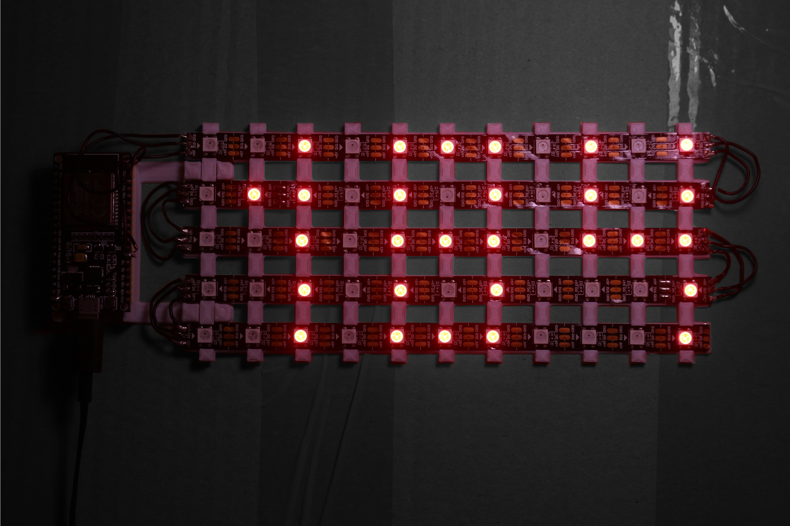

This is a helpful gadget which makes my life easier by passively showing me my current blood sugar. It's able to show 3 digits, which is enough to show my entire possible blood sugar range in mg/dl.
(I know, bad picture! It's way better with your eyes!)
This is a NodeMCU ESP32, an incredible microcontroller. It is Bluetooth as well as WiFi capable. The ESP controls a total of 55 WS2812b RGB LEDs. The LEDs are arranged in a 11*5 matrix in order to show a maximum of three digits.
The LEDs are hold in place by a grid designed in Fusion 360 and 3D printed on my (modified) Ender 3 V2. The glue of the LEDs is not required, as they are getting clipped by this design. The ESP has its separate mount, which also snaps on tightly to the matrix model.
The designs allow for a very easy assembly, as there is no gluing etc. required, everything just snaps together (as long as the printer is calibrated. I tried. I swear...)
The ESP32 is flashed with WLED, in my opinion the best software to control lightstrips!
I wanted my creation to be as little distracting and easy as possible. This led to me investing quite a bit of time trying to make it work as a regular lamp. I achieved this by adding the ESP with WLED to my Home Assistant. The Raspberry Pi 4 which runs my Home Assistant instance can then compute everything required for the lights to show my blood sugar. I did this using "pyscript", an awesome addon to write python scripts which can interact with your home.
It does this by taking the state, brightness and color from a virtual "Blood sugar lamp", which is grouped together with all my other lamps. This means that this display will only be on when my room lights are on and that it automatically adapts to the correct color.
The blood sugar is also available to python since I have myself integrated into my home :D
Okay, maybe just my Dexcom G6 (0.7% Cyborg??). My phone is constantly beaming my blood sugar to Dexcom, which my Home Assistant can scrape with the "Dexcom integration". Works like a charm.
Having all this stuff on my Home Assistant also allows me to build some cool automations. An example is my "Nighttime blood sugar alert". This triggers under these conditions:
I can be pretty sure, that I am in bed when my phone is charging at night. As soon as these conditions are met, all my lights turn on to 15% brightness full red (I care about my eyes yk).
I'm very happy with the results, as it's not distracting at all and even acts as an ambient light. The Home Assistant integration is very useful, especially for automations like I described above.
The code is currently not available. If there is any interest in the code (Or if you just want to know something, does not really matter), you can find my contacts here.
Thanks for reading <3